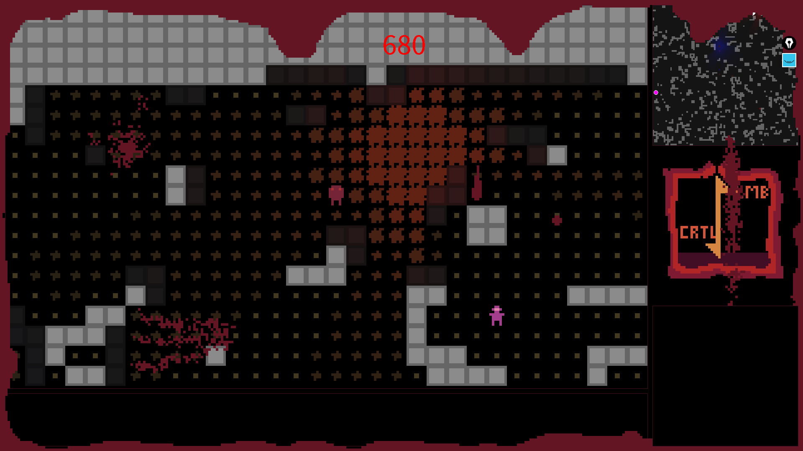

Double 0 Negative
A small roguelike made for MiniJam 118
You play as a vampire drinking blood and killing monsters
A view of the game

Zoomed in view of the game
Further Links:
https://holymoleymacaroni.itch.io/double-0-negative
Related Projects
(game) The Great Black Yonder - A Poem by You
(game) Katchem
(game) Varrior
(jam) The Great Black Yonder - A Poem by You
(jam) Katchem
(jam) Varrior
(roguelike) Finding Remote Locations on Grid-Based maps
(roguelike) Varrior